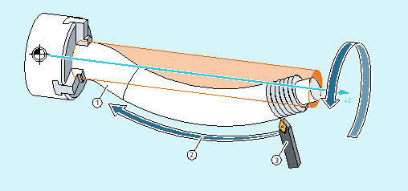

The G commands G335 and G336 can be used to turn convex threads (= differing to the cylindrical form). Application is the machining of extremely large components that sag in the machine because of their self-weight. Paraxial thread would result in the thread being too small in the middle of the component. This can be compensated with convex threads.
Turning a convex thread
The turning of a convex thread is programmed with G335 or G336:
| Turning of a convex thread on a circular tool path in a clockwise direction |
| Turning of a convex thread on a circular tool path in a counter-clockwise direction |
The programming is performed first as for a linear thread by specifying the axial block end points and the pitch via parameters I, J and K (see "Thread cutting with constant lead (G33, SF)").
An arc is also specified. As for G2/G3, this can be programmed via the center point, radius, opening angle or intermediate point specification (see "Circular interpolation"). When programming the convex thread with center point programming, the following must be taken into account: Since I, J and K are used for the pitch in thread cutting, the circle parameters in the center point programming must be programmed with IR=..., JR=... and KR=....
| Cartesian coordinate for the circle center point in the X direction |
| Cartesian coordinate for the circle center point in the Y direction |
| Cartesian coordinate for the circle center point in the Z direction |
| Note |
IR, JR and KR are the default values of the interpolation parameter names for a convex thread that can be set via machine data (MD10651 $MN_IPO_PARAM_THREAD_NAME_TAB). Differences to the default values must be taken from the specifications of the machine manufacturer. |
Optionally, a starting point offset SF can also be specified (see "Thread cutting with constant lead (G33, SF)").
The syntax for the programming of a convex thread therefore has the following general form:
G335/G336 <axis target point coordinate(s)> <pitch> <arc> [<starting point offset>]| Program code | Comment |
|---|---|
| N5 G0 G18 X50 Z50 | ; Approach starting point. |
| N10 G335 Z100 K=3.5 KR=25 IR=-20 SF=90 | ; Turn convex thread in the clockwise direction. |
Convex thread in the clockwise direction with end and center point programming
| Program code | Comment |
|---|---|
| N5 G0 G18 X50 Z50 | ; Approach starting point. |
| N10 G336 Z100 K=3.5 KR=25 IR=20 SF=90 | ; Turn convex thread in the counter-clockwise direction. |
Convex thread in the counter-clockwise direction with end and center point programming
| Program code | |
|---|---|
| N5 G0 G18 X50 Z50 | |
| N10 G335 Z100 K=3.5 CR=32 SF=90 |
Convex thread in the clockwise direction with end point and radius programming
| Program code | |
|---|---|
| N5 G0 G18 X50 Z50 | |
| N10 G335 Z100 K=3.5 AR=102.75 SF=90 |
Convex thread in the clockwise direction with end point and opening angle programming
| Program code | |
|---|---|
| N5 G0 G18 X50 Z50 | |
| N10 G335 K=3.5 KR=25 IR=-20 AR=102.75 SF=90 |
Convex thread in the clockwise direction with center point and opening angle programming
| Program code | |
|---|---|
| N5 G0 G18 X50 Z50 | |
| N10 G335 Z100 K=3.5 I1=60 K1=64 |
Convex thread in the clockwise direction with end and intermediate point programming